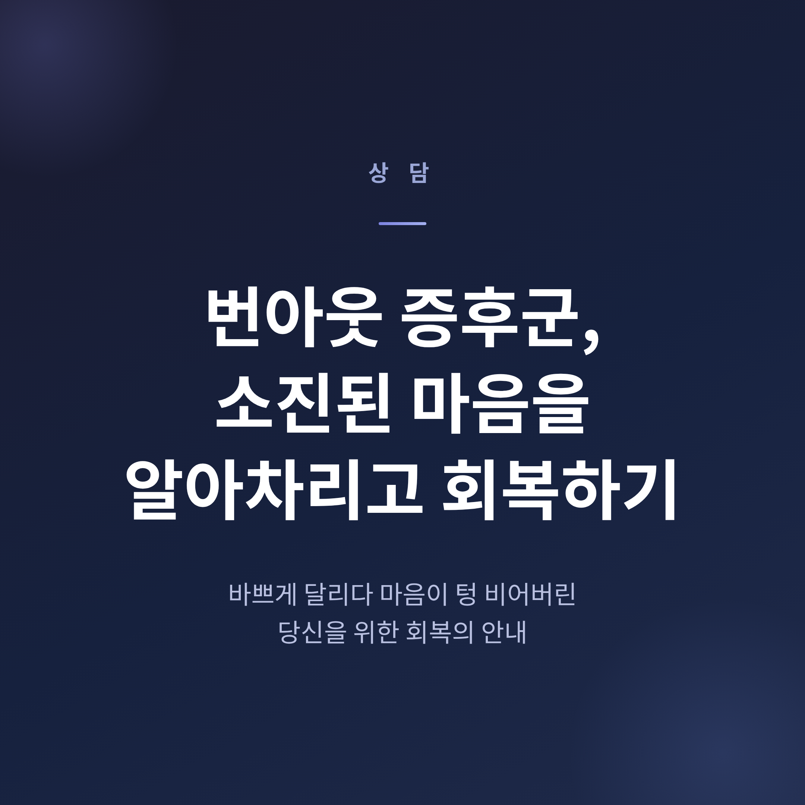
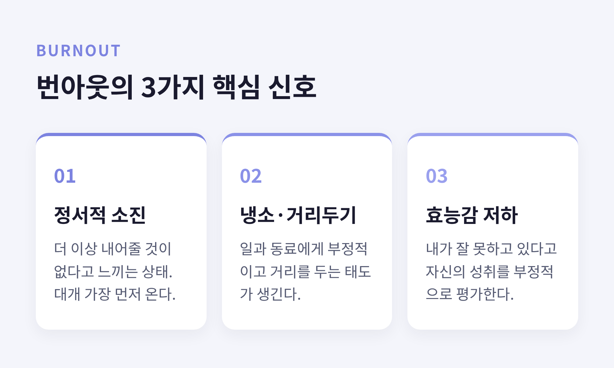
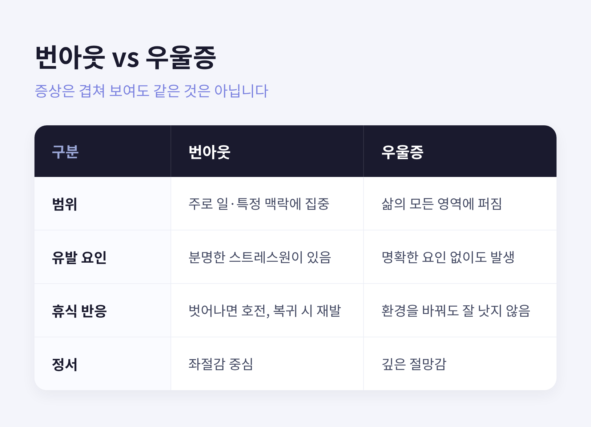
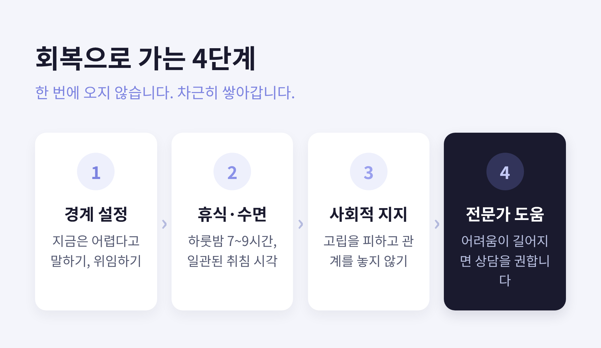

[상담] 번아웃 증후군, 소진된 마음을 알아차리고 회복하는 법

이번 글에서는 번아웃 증후군을 어떻게 알아차리고, 어떻게 회복할 수 있는지를 정리해 보겠습니다.
바쁘게 달리다 어느 날 마음이 텅 비어버린 느낌이 든다면, 이 글이 작은 단서가 되었으면 합니다.
- 번아웃은 WHO가 분류한, 만성적인 직장 스트레스에서 비롯된 '증후군'입니다. 질병은 아닙니다.
- 핵심 신호는 세 가지 — 정서적 소진, 냉소·거리두기, 효능감 저하입니다.
- 경계 설정, 충분한 휴식, 사회적 지지가 회복의 출발점이며, 어려움이 길어지면 전문가의 도움을 권합니다.
■ 번아웃이란 무엇인가
세계보건기구(WHO)는 2019년, 국제질병분류 11판(ICD-11)에 번아웃을 등재했습니다.
정의는 이렇습니다. "성공적으로 관리되지 못한 만성적인 직장 스트레스에서 비롯된 증후군."
한 가지 짚어둘 점이 있습니다.
번아웃은 ICD-11에서 '질병'이나 '의학적 상태'로 분류되지 않습니다.
'건강 상태에 영향을 미치는 요인'이라는 항목에 들어 있을 뿐입니다.
WHO는 번아웃을 직업적 맥락의 현상에만 한정한다고 명시합니다.
삶의 다른 영역을 설명하는 데 함부로 가져다 쓰지 말라는 뜻이기도 합니다.
다시 말해, 번아웃은 개인의 나약함이 아닙니다.
'일과 사람의 관계'에서 생겨나는 현상에 가깝습니다.
■ 세 가지 핵심 신호
크리스티나 매슬랙의 연구와 WHO 정의는 번아웃을 세 차원으로 봅니다.
표현은 조금씩 다르지만 가리키는 것은 같습니다.

- 정서적 소진: 정서적 자원이 바닥나 "더 이상 내어줄 것이 없다"고 느끼는 상태입니다. 대개 가장 먼저 찾아옵니다.
- 냉소·거리두기: 자기 일이나 동료·고객에게 부정적이고 거리를 두는 태도가 생깁니다.
- 효능감 저하: 자신의 능력과 성취를 부정적으로 평가하게 됩니다. "내가 잘 못하고 있다"는 느낌입니다.
흔히 정서적 소진이 먼저 오고, 냉소와 효능감 저하가 뒤따른다고 보고됩니다.
다만 모두가 같은 순서를 밟지는 않습니다. 사람마다 결이 다릅니다.
몸도 신호를 보냅니다.
만성 피로, 수면의 변화, 두통과 소화기 문제, 집중력 저하, 사소한 일에 나는 짜증.
이런 것들이 겹쳐 온다면 한 번쯤 멈춰 서서 자신을 들여다볼 때입니다.
■ 번아웃과 우울증은 어떻게 다른가
번아웃과 우울증은 증상이 겹쳐 헷갈리기 쉽습니다.
그러나 같은 것은 아닙니다.

| 구분 | 번아웃 | 우울증 |
|---|---|---|
| 범위 | 주로 일·특정 맥락에 집중 | 삶의 모든 영역에 퍼짐 |
| 유발 요인 | 분명한 스트레스원이 있음 | 명확한 요인 없이도 발생 가능 |
| 휴식 반응 | 스트레스원에서 벗어나면 호전, 복귀 시 재발 | 환경을 바꿔도 잘 나아지지 않음 |
| 정서 | 좌절감 중심 | 깊은 절망감 |
번아웃은 우울증의 한 종류가 아닙니다.
다만 방치된 만성 번아웃은 우울 삽화로 이어질 수 있습니다.
여기서 조심스럽게 한 가지를 덧붙이고 싶습니다.
증상이 겹치는 만큼, 자가 진단에는 분명한 한계가 있습니다.
정확한 구분과 평가는 정신건강 전문가의 몫입니다.
■ 회복으로 가는 길
회복은 단번에 오지 않습니다.
근거 기반의 전략들을 차근히 쌓아가는 편이 현실적입니다.

- 경계 설정: 우선순위가 낮은 요청에 "지금은 어렵다"고 말해 보시면 좋겠습니다. 업무 시간을 정하고 지키는 일, 위임도 여기에 포함됩니다.
- 충분한 휴식과 수면: 하룻밤 7~9시간이 권장됩니다. 취침 시각의 일관성이 총 수면 시간만큼 중요하다고 합니다.
- 사회적 지지: 고립은 번아웃을 악화시킵니다. 동료·가족·친구와의 관계를 놓지 않으시길 권합니다.
- 몸을 움직이기: 20분 산책만으로도 스트레스 호르몬이 줄고 기분이 나아진다는 보고가 있습니다.
한 가지 한계도 솔직히 인정해야겠습니다.
번아웃은 개인의 노력만으로 다 해결되지 않습니다.
업무량 조정, 통제권 부여, 공정한 보상 같은 직장 차원의 변화가 함께 가야 합니다.
예전에는 "내가 더 버티면 된다"고 생각하기 쉽습니다.
지금은 "환경과 나의 관계를 함께 살핀다"는 쪽이 더 건강한 태도라고 생각합니다.
■ 전문가의 도움이 필요한 때
다음과 같은 신호가 보인다면, 혼자 애쓰지 마시길 바랍니다.
- 사소한 일에도 압도당하고, 갇힌 듯한 느낌이 이어질 때
- 설명되지 않는 신체 증상, 식욕·수면의 뚜렷한 변화가 있을 때
- 집이나 직장에서 제 기능을 하기 어렵고, 무력감과 절망감이 지속될 때
이런 신호가 2주 이상 이어지거나 일상이 무너진다면, 정신건강 전문가의 상담을 권합니다.
정신건강의학과, 임상심리·상담 전문가, 직장의 EAP 등을 떠올려 보시면 좋겠습니다.
이 글은 일반적이고 교육적인 정보를 정리한 것입니다.
전문가의 진단이나 치료를 대체하지 않습니다.
지금 마음이 많이 힘드시다면, 그 어려움을 혼자 떠안지 마시고 전문가의 도움을 받으시길 진심으로 권합니다.
정리하면 이렇습니다.
번아웃은 게으름의 증거가 아니라, 오래 애써온 사람에게 찾아오는 신호입니다.
그 신호를 부끄러워하기보다, 알아차리는 일이 회복의 첫걸음입니다.
"소진은 약함이 아니라, 잠시 쉬어가라는 마음의 언어입니다."
지금 충분히 지쳐 있다면, 오늘 하루쯤은 자신에게 쉼을 허락해도 괜찮지 않을까요.